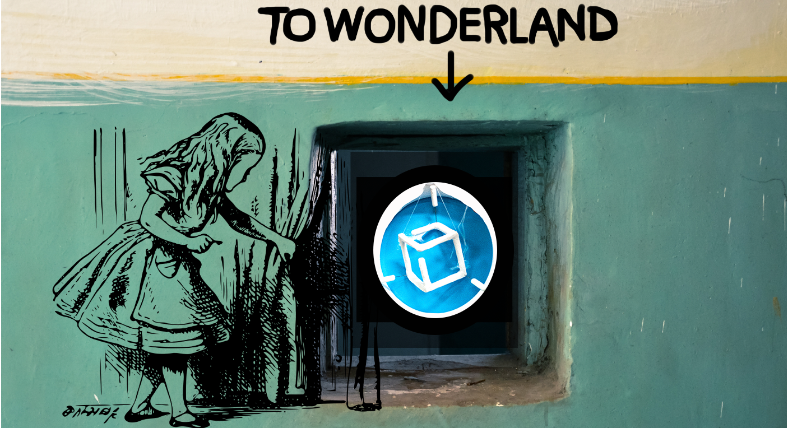

... 'cause the world is multidimensional
Kompakkt loading iiif manifests
Small introduction of our current implementation state
Presented by Lukas Günther & Zoe Schubert
TIB Hannover
Overview
Basic Model in Scene

Transformation: Rotation
Transformation: Positioning

Basic Model in Scene
Background Color

Spaces
Babylon.js & Kompakkt
Babylon.js
- Babylon.js is inherently and deeply left handed with Y up
- We offer an alternative with the scene.useRightHandedSystem but this is not the main mode. And even in this mode the system is still Y up (but with right handed mode).
- By setting the camera upVector to 0, 0,1 you are actually rotating the camera but all the maths will still be done in a Y up system

Transformation: Rotation
Babylon.js & Kompakkt
Babylon.js
Rotation Conventions
Mesh rotation: The most straight forward method to change the orientation of a mesh is the rotation property
- Where is the center of rotation?
- Are they applied in a clockwise or counter clockwise direction?
- What is the frame of reference?
- In which order are they applied?
Mesh rotation: The most straight forward method to change the orientation of a mesh is the rotation property
- On creation, the center of rotation is the local origin of the mesh.
- The center of rotation is the local origin of the mesh and rotations are always counter clockwise when looking in the positive direction of the stated axis.
- In Babylon.js the rotation frame of reference is in the local space of the mesh being rotated.
- It makes no difference the resulting orientation will always be the same.
Rotation Conventions
- Rotation in 3D space is always tricky. The order in which rotations are applied and the frame of reference used changes the final orientation of a mesh. There is a range of conventions for applying rotations in 3D modelling.
- There are several methods of achieving rotations within Babylon.js all of which use a particular convention.
- Euler Angles
- Euler Angles to Quaternions
Transformation: Positioning
Babylon.js & Kompakkt
Babylon.js
Coordinate Transformation
Rotation Conventions
- Usually, within Babylon.js, positioning, rotating and scaling a mesh changes its world matrix only and the vertex position data of a mesh is left unchanged.
- In certain situations you might be interested in applying a transform (position, rotation, scale) directly to the mesh vertices and leave world matrix unchanged. This is called baking and, of course, changes the center of transformation of the mesh
Coordinate Transformation: local space and world matrix
Positioning

Coordinate Transformation: local space and world matrix
Translate

And Kompakkt?
How we do it so far
- Calculate the center of the visible mesh(es)
- Create an invisible mesh as center and set it and its pivot point to the calculated center of the mesh
- Use the invisible mesh as parent, do the transformations, apply the new position to the children, destroy the parent